Ručně modelovaný povrch pro stěny, niky, čela barů i reprezentativní interiéry. Nezůstává u hladké plochy: pracuje s reliéfem, rytmem a světlem, takže ze stěny dělá výrazný architektonický prvek.
Plastická stěrka dává stěně vlastní hmotu a rytmus. Může být jemná a taktilní, nebo výrazně sochařská. Ve chvíli, kdy na ni dopadne boční světlo, začíná fungovat skoro jako reliéfní obraz v měřítku celé místnosti.
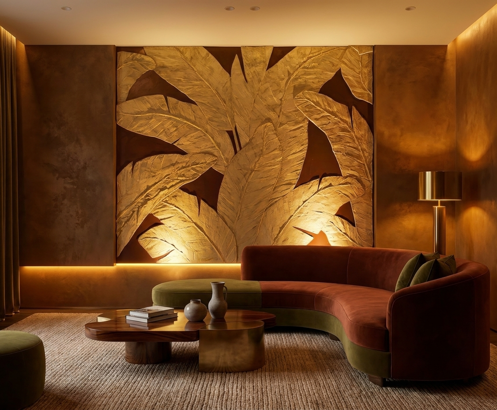
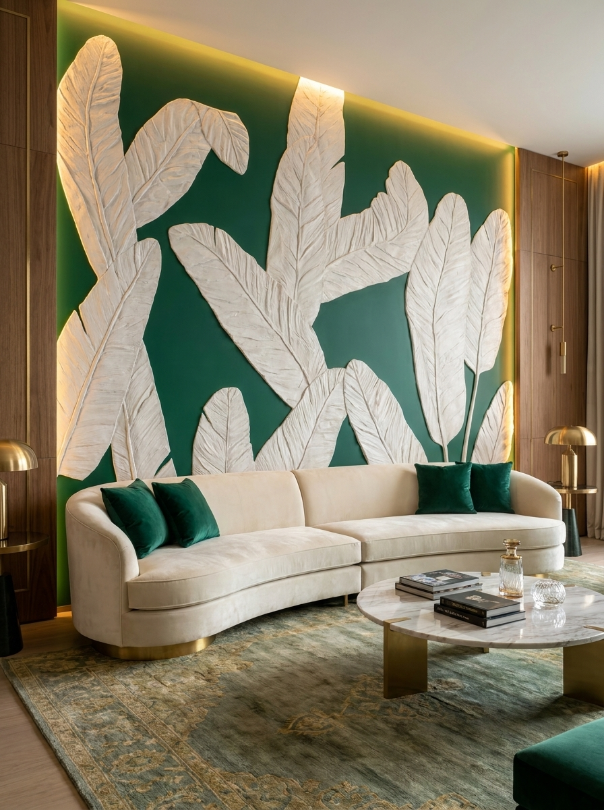
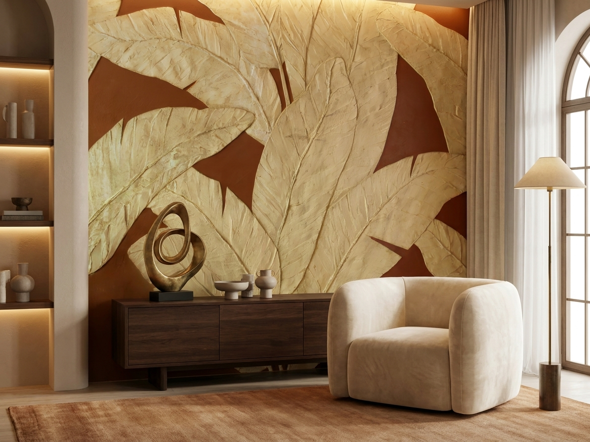
Každá realizace vzniká ručně podle prostoru, ne podle katalogového vzoru. Pracujeme s listovými motivy, geometrickým rytmem i volnou modelací, takže povrch může být dekorativní, klidný nebo výrazně scénografický.
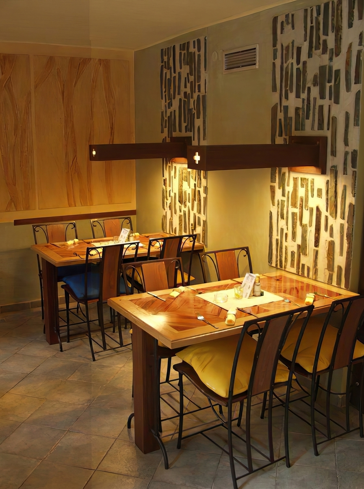
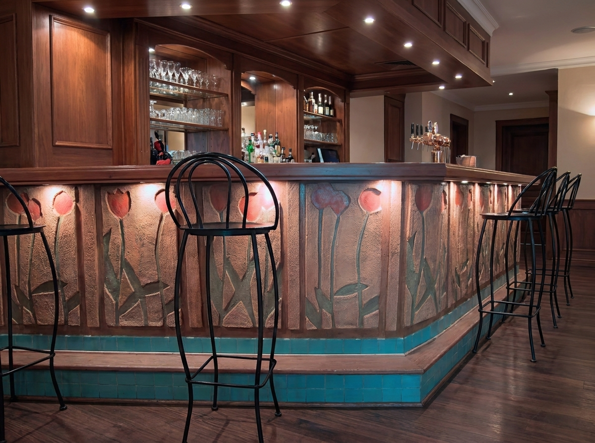
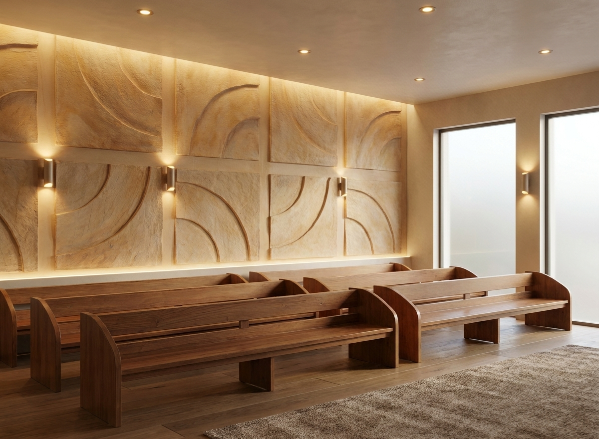
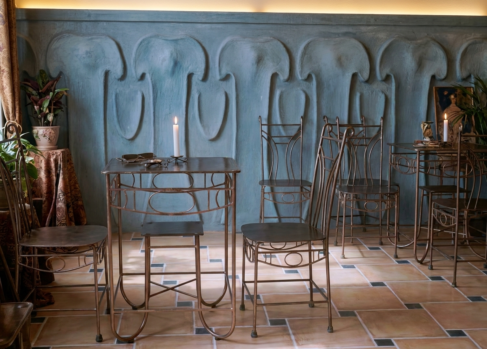
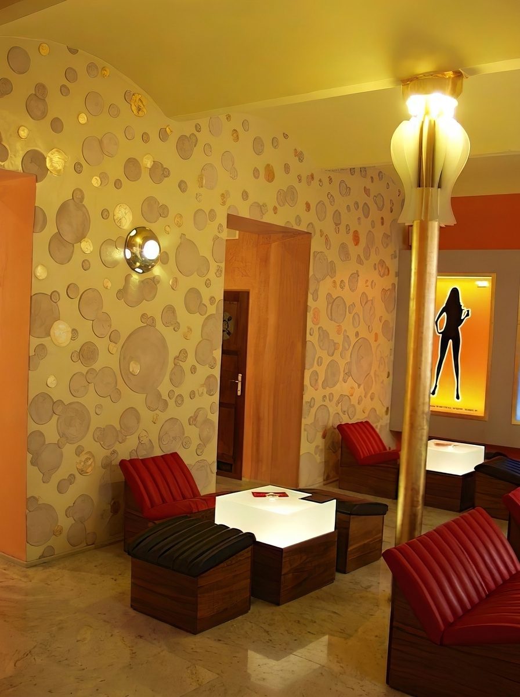
Tradiční vápenné techniky, které pracují s hloubkou, leskem a jemnou kresbou ruky. Nejde o plošný nátěr, ale o vrstvený povrch, který mění výraz podle světla a úhlu pohledu.

Leštěná stěrka má v sobě hloubku kamene. Může být klidná a matná, nebo téměř zrcadlová, podle vrstvení, pigmentu a finálního leštění.
Na rozdíl od běžné malby nevytváří jen barvu. Vytváří povrch, který má vlastní materiálovou přítomnost a díky ručnímu zpracování nikdy není sterilně opakovatelný.
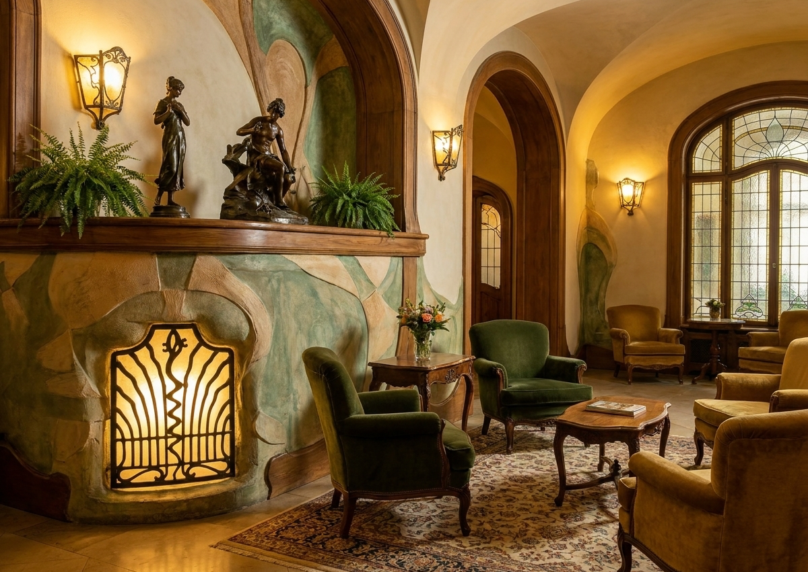
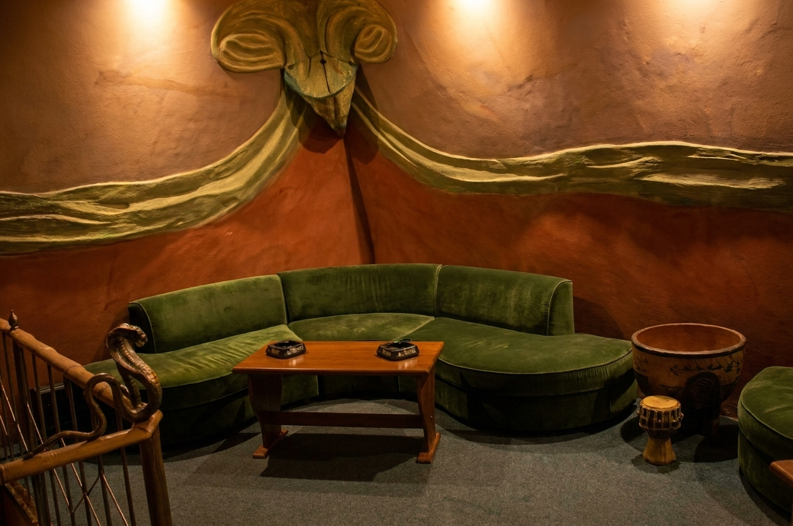
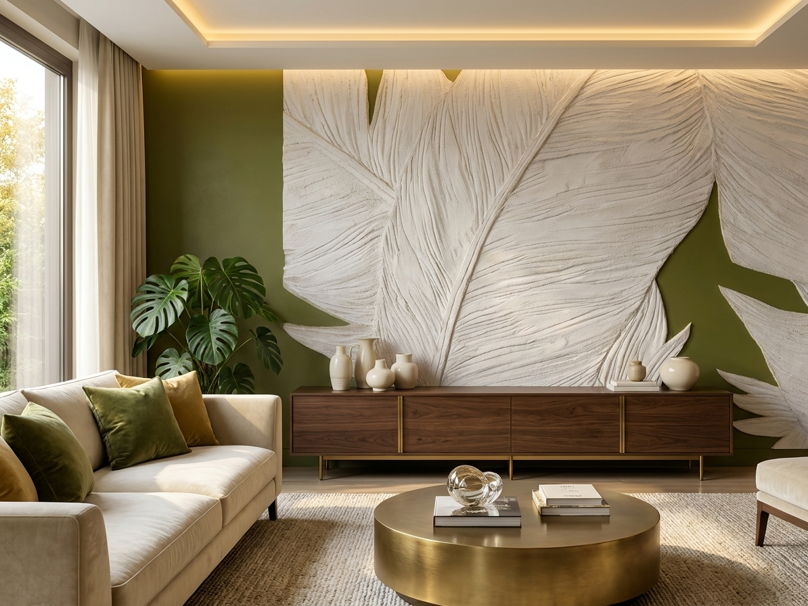
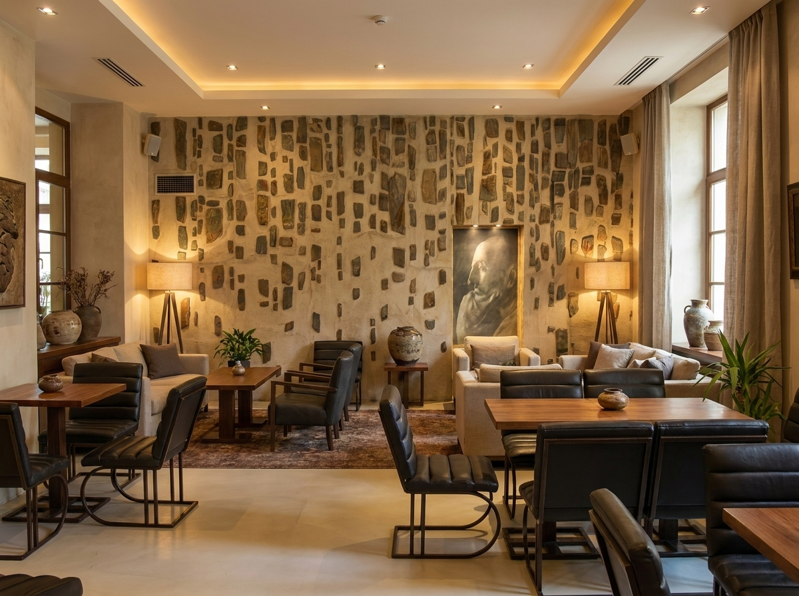
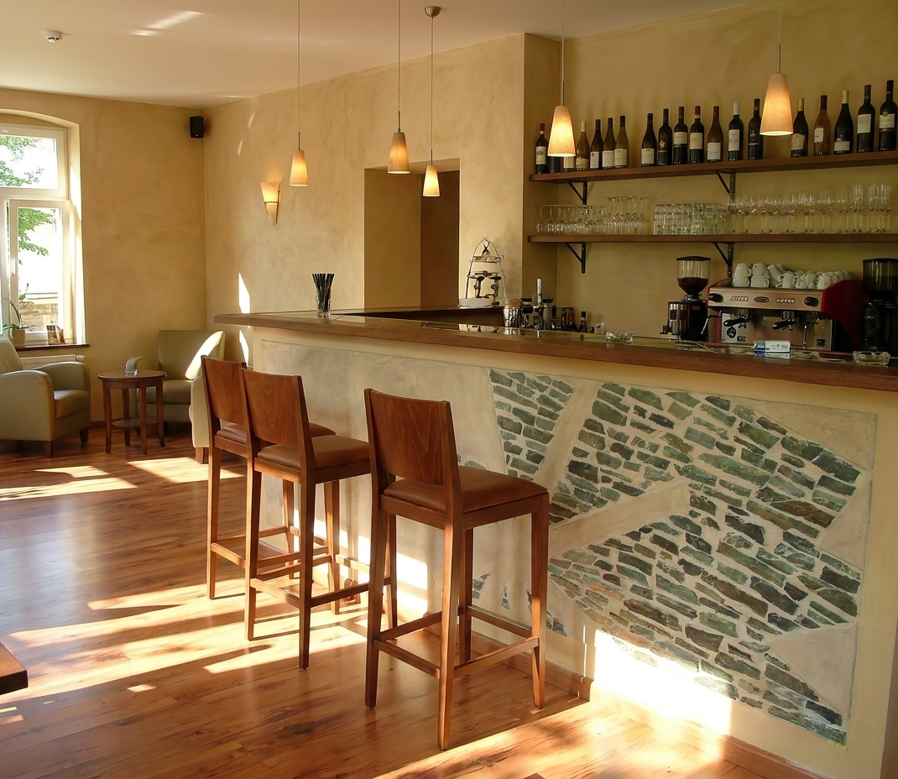
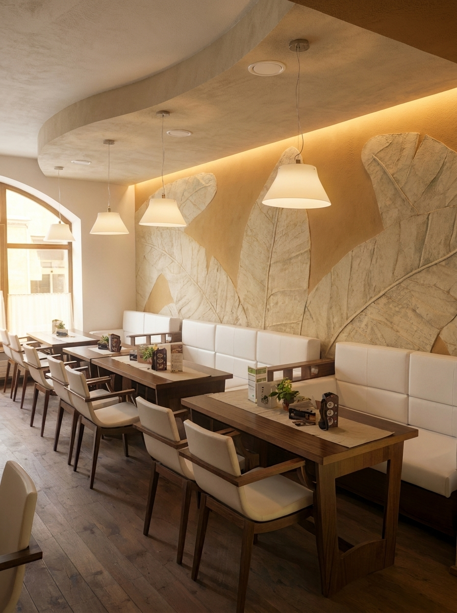
Stěrkové povrchy stojí na přesné přípravě podkladu, technologických pauzách a finálním uzavření. Právě v detailech se rozhoduje, jestli bude povrch krásný i po letech.
Kontrola pevnosti, vlhkosti a rovinnosti. Nevhodný podklad se zpevní, vyrovná nebo nahradí.
Penetrace, lokální armování a řešení rohů, dilatací i kritických napojení.
Ruční nanášení ve vrstvách s broušením mezi kroky. Tady vzniká finální textura.
Impregnace, vosk nebo lak podle provozu. Součástí je doporučení údržby.